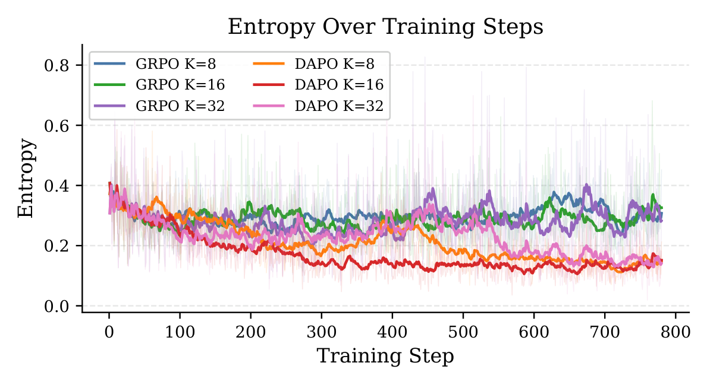
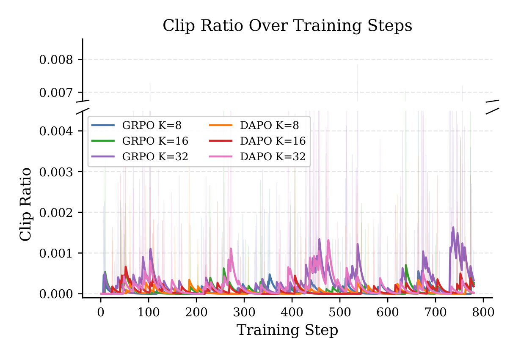
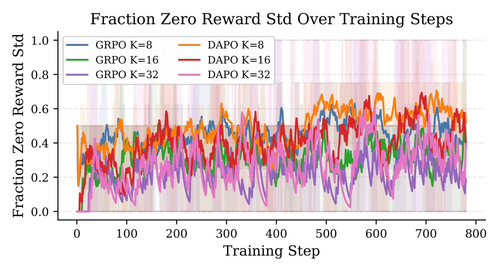
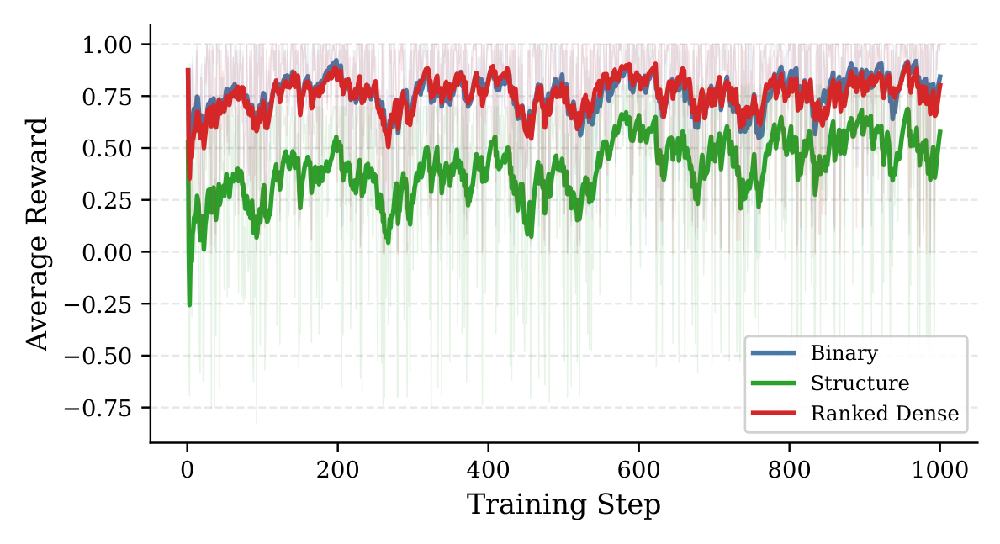

Learning Dynamics in RLVR Near Capacity Mapping optimization dynamics and capacity constraints in small LLMs
York College of Pennsylvania
Overview
Most of what is known about reinforcement learning from verifiable rewards comes from models at 7B parameters and above. Small models are where a lot of research actually gets done, and they behave differently: less room to explore, less internal representation for the policy to draw on. This is a controlled study of what RLVR does to a 0.6B model that is already close to its ceiling on the task.
The model is Qwen3 0.6B, supervised fine-tuned on math chain-of-thought traces, trained with RLVR on GSM8K. It happens in two phases. Phase 1 holds the reward fixed at binary correctness and varies the optimizer (GRPO or DAPO) and the group size. Its job is to pick one stable configuration to use as a baseline. Phase 2 holds that baseline fixed and varies only the reward.
Two things come out of it. Rewards that separate completions within a group, rather than only pass from fail, keep the learning signal alive once the model starts solving most prompts. And every configuration lands between 69 and 72% from a 68% start, with the first two points coming quickly and nothing ever passing 72. At this scale RLVR sharpens the policy the model already has; it does not find a new one.
Policy gradients for RLVR
A problem \(x\) is drawn from the task distribution \(\mathcal{D}\), the model samples a response \(y \sim \pi_\theta(\cdot \mid x)\), and a deterministic verifier returns a scalar \(r(x, y)\). No reward model, no human labels. The objective is the expected reward:
$$J(\theta) = \mathbb{E}_{x \sim \mathcal{D},\; y \sim \pi_\theta(\cdot \mid x)}\big[\, r(x, y) \,\big]$$Everything below descends from REINFORCE. A response is a sequence of tokens, so the log-likelihood factorizes and the one sequence-level reward multiplies the gradient of every token in it:
$$\nabla_\theta J = \mathbb{E}\Big[\big(r(x,y) - b\big) \sum_{t=1}^{|y|} \nabla_\theta \log \pi_\theta\big(y_t \mid x, y_{<t}\big)\Big]$$That sum is the thing to keep in mind for the rest of the page. The verifier scores the answer, but the gradient lands on every token of the reasoning that produced it.
GRPO
GRPO drops PPO’s value network and gets its baseline from the group instead. Sample \(G\) responses per prompt, score them, and normalize within the group:
$$\hat A_i = \frac{R_i - \operatorname{mean}(\{R_j\}_{j=1}^{G})}{\operatorname{std}(\{R_j\}_{j=1}^{G})}$$With the per-token importance ratio \(\rho_{i,t}(\theta) = \pi_\theta(y_{i,t} \mid x, y_{i,<t}) \,/\, \pi_{\theta_\text{old}}(y_{i,t} \mid x, y_{i,<t})\), the objective is PPO’s clipped surrogate averaged per response, then across the group, with a KL penalty back to a frozen reference policy:
$$\mathcal{J}_\text{GRPO}(\theta) = \mathbb{E}\Bigg[\frac{1}{G}\sum_{i=1}^{G} \frac{1}{|y_i|}\sum_{t=1}^{|y_i|} \min\!\Big(\rho_{i,t}\hat A_i,\; \operatorname{clip}\big(\rho_{i,t},\,1-\epsilon,\,1+\epsilon\big)\hat A_i\Big)\Bigg] - \beta\, \mathbb{D}_\text{KL}\big(\pi_\theta \,\|\, \pi_\text{ref}\big)$$DAPO
DAPO keeps the group baseline and changes how the loss is assembled:
$$\mathcal{J}_\text{DAPO}(\theta) = \mathbb{E}\Bigg[\frac{1}{\sum_{i=1}^{G}|y_i|}\sum_{i=1}^{G}\sum_{t=1}^{|y_i|} \min\!\Big(\rho_{i,t}\hat A_i,\; \operatorname{clip}\big(\rho_{i,t},\,1-\epsilon_\text{low},\,1+\epsilon_\text{high}\big)\hat A_i\Big)\Bigg] \quad \text{s.t.}\quad 0 < \big|\{\, y_i : \text{correct} \,\}\big| < G$$Three differences matter here. The KL term is gone, so the policy is free to move away from where it started. The clip range is decoupled, which leaves more room to raise the probability of unlikely tokens. And the loss is normalized over every token in the group rather than per response.
It is worth being exact about that last one, because “token-level” is easy to overread. In both objectives the advantage is a single number per response, \(\hat A_{i,t} = \hat A_i\) for every \(t\), and in both the ratio and the clip act per token. What changes is the weight each token gets:
$$w_{i,t}^{\text{GRPO}} = \frac{1}{G\,|y_i|} \qquad\qquad w_{i,t}^{\text{DAPO}} = \frac{1}{\sum_{j}|y_j|}$$Under GRPO a token in a long response counts for less than a token in a short one, so a long wrong answer is penalized less per token than a short one. Under DAPO every token counts the same. Neither one can tell a good step from a bad step inside a single response. The only thing that can make the signal finer is the reward, through how it orders responses within the group.
Reward formulations
Since \(\hat A_i\) only depends on where \(R_i\) sits relative to its groupmates, a reward is really a way of ranking \(G\) responses. The three rewards in phase 2 differ in how much of that ranking they can express.
Binary correctness
$$r_\text{bin}(x, y) = \mathbb{1}\big[\,\text{answer}(y) = \text{answer}^\star(x)\,\big]$$One bit per response. Within a group there are exactly two advantage values: every correct response gets the same credit whether its reasoning was clean or got there by accident, and every wrong one gets the same blame whether it was nearly right or never boxed an answer. When all \(G\) responses are correct the standard deviation is zero and the prompt contributes nothing.
Structure + correctness
The SFT traces use a PLAN / WORK / ANSWER layout. The structure
reward keeps correctness as the dominant term and uses the layout, the depth of the work section, and
a repetition penalty to spread responses apart on either side of it:
Here \(c\) is correctness, \(s \in [0,1]\) scores the plan, work, answer structure, \(d \in [0,1]\) is work-section depth, \(m\) is 0.5 for a wrong boxed answer and 0.7 for no answer at all, and the last term fires on responses that are degenerately short or long. A correct response is always worth more than a wrong one. Inside each tier, the reward carries information about how the response got there.
Ranked dense
The ranked reward scores quality with a weighted mix (correctness 40%, structure 25%, format 15%, depth 10%, conciseness 5%, repetition 5%), then splits the group into a correct tier and a wrong tier and spaces responses evenly by rank:
$$r_\text{rank}(y_i) = \begin{cases} \dfrac{k_i}{n_c - 1} & y_i \text{ correct, rank } k_i \text{ of } n_c \\[10pt] -1 + 0.99\,\dfrac{k_i}{n_w - 1} & y_i \text{ wrong, rank } k_i \text{ of } n_w \end{cases}$$This is dense, but it is a rank rather than a measurement. The same response gets a different reward depending on who it was sampled alongside, and a tiny quality gap gets the same spacing as a large one. The magnitude information the structure reward keeps is thrown away.
| Reward | Range | Same response, same reward? | Separates within a tier? |
|---|---|---|---|
| Binary | \(\{0, 1\}\) | Yes | No |
| Structure + correctness | \([-1, 1]\) | Yes | Yes, by magnitude |
| Ranked dense | \([-1, 1]\) | No, depends on the group | Yes, by rank only |
Setup
Everything starts from the same checkpoint: Qwen3 0.6B base, fine-tuned on math chain-of-thought
traces ranging from grade school to competition problems. It scores 68.0% on the GSM8K test set before
any RL. Training uses allenai/RLVR-GSM, which is GSM8K problem and answer pairs. Grade
school math is deliberate. It is well inside what the model can answer, so the thing being measured is
the optimization, not whether the task is reachable at all.
All runs are full-parameter fine-tuning on a single RTX 5070 Ti with 16 GB, which is what sets the
model size and the batch. Training uses TRL’s GRPOTrainer with vLLM for rollouts.
| Setting | Phase 1 | Phase 2 |
|---|---|---|
| Objective | GRPO (\(\beta = 0.03\)) or DAPO (\(\beta = 0\)) | DAPO |
| Group size \(G\) | 8, 16, 32 | 32 |
| Reward | Binary | Binary, structure, ranked dense |
| Steps | 780 | 1000 |
| Learning rate, warmup | \(1 \times 10^{-5}\), 50 steps, AdamW, bf16 | |
| Batch | 2 per device × 16 accumulation = 32 completions per step | |
| Clip \(\epsilon\) | 0.10 | |
The batch is fixed in completions, so group size trades against prompt diversity: \(G = 8\) sees four prompts per step and \(G = 32\) sees one. Phase 1’s group size axis is really an axis between more samples of one problem and fewer samples of several.
Every 10 steps a hand-picked subset of the GSM8K test split is evaluated and the ten best checkpoints are kept. After training, those ten are run on the full 1,319-problem test set and the best is reported. Final evaluation uses Transformers generation rather than greedy decoding, which cost a steady ~3 points on every checkpoint, including the SFT start. Qwen reports the same degradation under greedy decoding for the Qwen3 family.
Results
Every run in the study, on the full GSM8K test set:
The error bars set the tone for reading everything else. Most gaps between runs are under two points, about the size of the noise on a single run, and each cell is one seed. The final numbers say that RL moved the model two to four points and then stopped. They do not rank the configurations. The ranking, where there is one, comes from the training dynamics.
Phase 1: choosing a baseline
Phase 1 is not a verdict on GRPO versus DAPO. The best 780-step number is GRPO at \(G = 16\), 71.7%. The point of the phase is to fix one configuration whose behavior over a long run is clean enough that phase 2’s reward changes can be read off it. The two objectives also differ in more than one way at once (KL penalty, clip range, loss normalization), so this comparison cannot say which component is responsible for what.


The entropy plot has a simple reading. GRPO’s KL term anchors it to the reference policy, so entropy stays where the reference left it. DAPO has no anchor, so it sharpens. Sharpening on its own is how a policy collapses, which is why the recoveries in the \(G = 32\) run matter: it narrows, reopens, and narrows again rather than locking in. Consistent with that, in a side run DAPO trained with a KL term and symmetric clipping reproduced GRPO’s flat entropy and broke down before 1,000 steps. That points at the KL anchor and the decoupled clip, not loss normalization, as what separates the two dynamics here.

Under a binary reward a zero-variance group is almost always a solved prompt: the policy got it right \(G\) times out of \(G\). DAPO’s higher fraction is the same sharpening seen in the entropy plot, showing up as more prompts the policy now answers every time. It is also the cost of a binary reward. Every solved prompt drops out of the batch, and the better the policy gets, the less signal there is left to learn from.
GRPO learning degraded near the 780-step mark. DAPO at \(G = 32\) kept improving when extended to 1,500 steps, reaching 71.9%, and that run became the baseline for phase 2: no KL anchor so it can keep moving, the largest group so the fewest wasted prompts, and entropy that recovers instead of collapsing.
Phase 2: the reward

| Reward (DAPO, \(G = 32\), 1,000 steps) | GSM8K test |
|---|---|
| Binary correctness | 71.5% |
| Ranked dense | 70.6% |
| Structure + correctness | 72.0% |
Structure + correctness is the only formulation whose reward keeps rising for the whole run, and it reaches 72.0% in 1,000 steps where the binary baseline needed 1,500 to reach 71.9%. The accuracy gaps are inside the noise; the difference in the curves is not.
What the dynamics say
A reward is a ranking of the group
Back to the REINFORCE sum. Whatever \(\hat A_i\) is, it multiplies every token in response \(i\). Take a response that makes an early mistake, writes something incoherent, and still lands on the right number. Under a binary reward it gets exactly the same credit as a clean derivation, and the optimizer is told to make the bad section more likely. At the start of a trace that is worse than it sounds: a corrosive early section conditions every token after it, pushing the model into text that looks nothing like what it saw in pretraining and fine-tuning.
The structure reward does not reach inside a response either. What it does is give the clean derivation a higher \(R_i\) than the lucky one, so after group normalization they get different advantages and the tokens of the clean one are pushed up harder. It also keeps signal on solved prompts. A group where all 32 responses are correct has zero variance under a binary reward and nonzero variance under the structure reward, so the prompt keeps teaching after the model has learned to answer it. That is the likeliest reason its reward curve keeps climbing while the binary curve sits flat.
Why ranked dense behaves like binary
Ranked dense is also dense and also separates within a tier, but it trained like the binary reward and finished lowest. Two properties set it apart from the structure reward. It is relative: a response’s reward, and so its advantage, shifts with its groupmates, so the same reasoning can be pushed up on one step and down on the next. And it throws away magnitude: after tiering and even spacing, a trivial quality difference and a large one produce the same gap in advantage. The optimizer ends up following a direction that changes from batch to batch, which looks the same from the inside as the sparsity of a binary reward. Dense is not enough. The reward has to be a consistent measurement of the response.
Capacity
Going from 68% to about 70% was fast and reliable in every run. Going from 70% to 72% was slow, and nothing got past 72%. The official Qwen3 0.6B thinking model, distilled from a much larger teacher, is reported at about 73%, and exploration-focused RL starting from that distilled model has reached about 75%. Starting from a model trained without distillation, no objective or reward in this study found that headroom.
This fits the view that RLVR does not teach a model new knowledge; it reshapes the policy so the model makes better use of what it learned in pretraining. The set of behaviors RL can reach is bounded by what the model can already represent, and at 0.6B that set is small. It is also why the standard recipe is to do RL at scale and distill down. A brief DoRA run in phase 2 points the same way: even at high rank the policy barely moved and sometimes regressed, because at 0.6B the adapter holds too few parameters to change behavior that full fine-tuning can only just shift.
At this scale the reward is a first-order design decision. Exploration is too limited to recover from a noisy signal, so the signal has to be good from the start.
In progress
These are early results and the evaluation is still being extended. What is being added:
- Seeds and intervals. Multiple seeds per cell and bootstrap confidence intervals, so the final-accuracy comparisons can carry weight on their own.
- Separating DAPO’s components. KL, clip range, and loss normalization ablated one at a time instead of as a bundle, following up the KL-regularized DAPO run.
- Larger models. The same two phases at 3B and 7B, to test whether the ceiling moves with parameter count and whether the reward effect survives once exploration is less constrained.
- Learned reasoning rewards. Replacing the hand-built structure score with a learned model of reasoning quality, since a fixed layout will not be the right structure for every task.